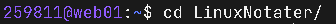

Notater Til Linux Eksamen 14. Desember 20022
Terminalen
Tmux: Terminal Multiplexer
- Tmux
- Tmux a: Attach. Kobler seg opp til siste oppkoblet tmux
- Tmux list-session: Lister opp alle nåværende
Terminal Kommandoer
- echo:
- cat: Concatonate. Cat kan brukes på 2 måter
- cat fil1.txt: Leser av innholdet i en fil, unasett filformat
- cat fil1.txt > fil2.txt: Skjøter sammen fil1 inn i fil2
- mkdir (1): Lager en directory. mkdir LinuxNotater
- mkdir (2): Lager flere directories. Man kan lage flere directories sammtidig med mkdir Katalog1/Katalog2/Katalog3
- rmdir (1): Sletter en tom directory
- rmdir (2): Sletter en directory
- cd: Change Directory: Ender på directorien man er i
- 
- ls: Lister innholdet i directorien. Lister opp alle filer og folders i nåværende directory
- ls -l: Dikter opp alle filer, men ekstra info
- ls -a: Viser alle filer, i tillegg til skulte filer
- ls -l | tac: Dikter opp alle filer i motsatt rekkefølge
- ls -ltr: Diktor opp filene etter tidspunktet de ble lagd. Fra gamlest til nyeste
- tree: Tre-visning av kataloginnhold
- pwd: Print Working Directory. Skriver ut nåværende katalog
- gcc: GNU Compiler Collection. Kompilerer .c filer
- last: Vister en liste over alle pålogginer, tmux åpninger
- whatsis:
- NOTE: Det går ann å utføre 2 kommandoer sammtidig ved bruk av ; Eks: tree; pwd
Jobbing med filer
- mv: Brukes til flytting eller entring av navn til filer.
- mv fil1.txt fil2.txt: Denne kommandoen bytter navnet til filen fil1.txt til fil2.txt
- chmod: Ender

-
- touch: Berører filer. Hvis den ikke finnes fra før av blir en ny fil opprettet, hvis den finnes fra før oppdateres tidsstempet.
- Symbolene <, >, >> og | : Kan brukes med echo, ls, pwd
- < : Innlesning fra annen fil
- > : Utskrift til fil. Eventuelt opprinnelig innhold overskrives
- >> : Legger til på slutten av filen - Ingen overskriving
- | : Pipeline: Utskrift sendes til et annet program
Variabler i Shellscripting og bash
- var="Hello World"
- echo $var : Skriver ut Hello World

- echo "$var" : Skriver ut Hello World
- echo '$var' : Skriver ut $var
- Hvis $var er tom eller ikke har noe verdi får man en
Type Editorer
Terminal Shortcuts
Kommandohistorie
- Ctrl + l: Samme funksjon som kommandoen "clear"
- Ctrl + d: Samme funksjon som kommandoen "exit"
- Ctrl + p: Samme funksjon som pilltast opp
- Ctrl + n: Samme funksjon som pilltast end
- Ctrl + r: Reverse search

Navigering på kommandolinjen
- Ctrl + a: Skyver musespekkeren til begynnelsen
- Ctrl + e: Skyver musespekkeren til slutten
- Ctrl + b: Samme funksjon som pilltast til venstre
- Ctrl + f: Samme funksjon som pilltast til høyres
- Alt(meta) + b: Samme funksjon som Ctrl + pilltast venstre. Dytter mouspekkeren ord for ord
- Alt(meta) + f: Samme funksjon som Ctrl + pilltast høyre. Dytter mouspekkeren ord for ord
Sletting på kommandolinjen
- Ctrl + u
- Ctrl + k
- Ctrl + c: Avbryter kommandoen
Skrivehjelp
- Tab: Autofullføring
- Venstre musetast: Markerer og kopierer
- Midterste musetast: Virker ikke for meg???
- Høyres musetast: Limer inn fra koperingstavla
Shellscripting
Bashcriptin